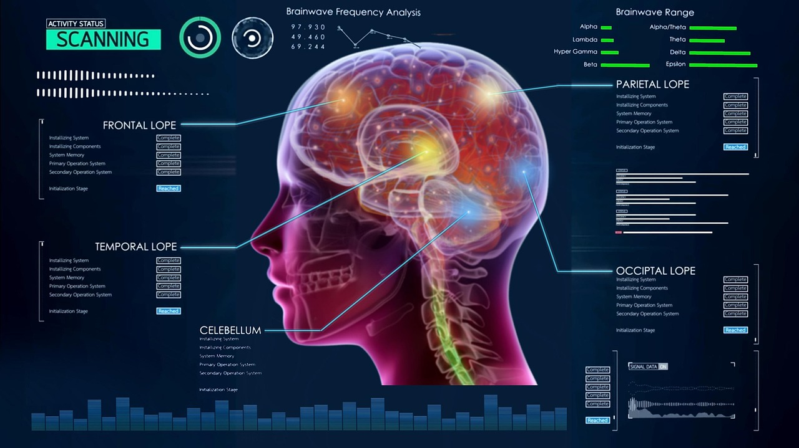

AI in Education: Personalizing Learning for the Future
By CodeCraft | August 28, 2025
Introduction
Artificial Intelligence is reshaping the education sector by personalizing learning, improving student engagement, and reducing the workload for educators.
Personalized Learning Paths
AI tools analyze student performance and learning styles to provide tailored content, pacing, and practice — making education more effective and inclusive.
Intelligent Tutoring Systems
AI-powered tutors offer real-time support, answer questions, and guide students through concepts without needing human intervention.
Automated Grading
AI can assess quizzes, assignments, and even essays, freeing up time for teachers to focus more on teaching and mentorship.
Smart Content Creation
AI can generate interactive simulations, digital textbooks, and flashcards, adapting content to suit different learning levels.
Conclusion
AI is turning traditional classrooms into smart learning environments. It empowers both students and teachers, creating a more engaging and personalized educational experience.